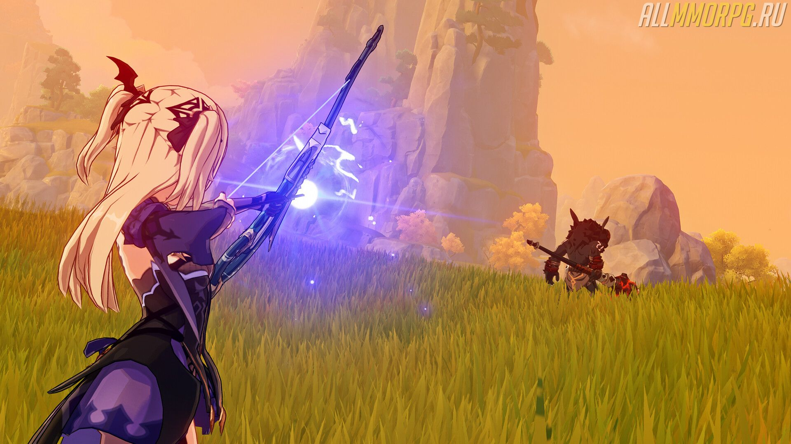
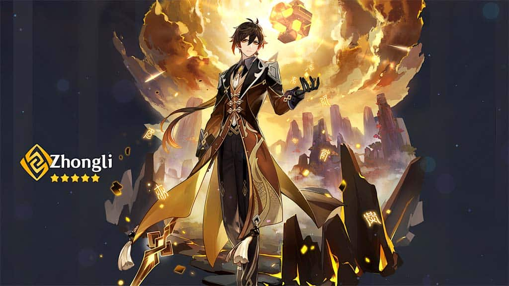

Genshin Impact: гайд по оружию
Genshin Impact – игра с огромным открытым миром и большим количеством разнообразного
контента. Вы можете сражаться с монстрами на локациях, спускаться в опасные подземелья,
ходить на мировых боссов с другими игроками и проч. Но чтобы быть ваша группа была
максимально эффективной, у каждого героя в отряде должно быть мощное
вооружение. В этом гайде мы раскажем, чем отличается каждый вид оружия, какие у него
особенности и преимущества.
Общая информация
В Genshin Impact есть 5 видов оружия:
- Мечи (одноручные/двуручные);
- Луки;
- Катализаторы;
- Копья (древковое).
Каждый из героев может использовать только один конкретный тип оружия, например, Синь
Янь носит исключительно двуручное оружие и луки или катализаторы ей не подходят.
Все базовые характеристики каждого вида оружия одного типа одинаковые.
Различие между ними заключается во вторичных параметрах. Поэтому всегда обращайте
внимание на второстепенные характеристики выбранного оружия и подбирайте те статы,
которые в приоритете для конкретного героя.
Кроме того, у некоторого оружия есть дополнительные эффекты. Рассмотрим их на примере
Боевого лука Фавония (см. скриншот ниже).

У Боевого лука Фавония есть такой дополнительный эффект:

Каждый лук с редкостью от 3 звезд (включительно) обладает особым эффектом. У других
луков, редкость которых ниже трех звезд, дополнительные эффекты отсутствуют.

То же самое касается и других типов вооружения (мечи, катализаторы и т. д.).
Обзор видов оружия
Луки

Луки предназначены для героев-лучников:
- Гань Юй;
- Тарталья;
- Диона;
- Венти;
- Фишль;
- Эмбер.
Благодаря стрелковому оружию герой может наносить огромный урон противникам до того,
как они подберутся к нему слишком близко. Луки также подходят для уничтожения летающих
врагов, когда они находятся в воздухе, и для решения головоломок, где требуется выстрелить
по конкретному объекту.
Самое главное преимущество стрелкового оружия – вероятность нанести сильный
критический урон. Выбрав слабое место у противника, совершите заряженный выстрел и
поразите цель мощной атакой. Однако если враг появится рядом с героем-лучником, этот
персонаж окажется малоэффективным и вам придется переключиться на героя ближнего боя.
Список лучших луков
Старайтесь экипировать своих героев-лучников одним из следующих луков:
- ★★★★★ Лук Амоса. Эффект «Волевая стрельба»: На 20~40% повышает крит. урон. Если стрела попала в цель, есть 60~100% вероятность нанести АОЕ-урон. Эффект срабатывает раз в 4~2 сек.;
- ★★★★★ Небесное крыло. Эффект «Эхо небесной поэзии»: Повышает урон от обычной/заряженной атаки на 12~24%. За каждую 0,1 сек. полета стрелы ее урон увеличивается на 8~16% (бонус к урону суммируется до 5 раз).
Хорошей альтернативой 5-звездочном лукам служит:
- Ржавый лук;
- Бесструнный;
- Церемониальный лук;
- Зеленый лук;
- Боевой лук Фавония.
Одноручные мечи

Одноручными мечами пользуются следующие герои:
Альбедо;
Кэ Цин;
Ци Ци;
Джинн;
Беннет;
Син Цю;
Кэйя.
Одноручные мечи удобны в использовании и не лишают героя мобильности, в
отличие от двуручного оружия. Герои, экипированные одноручными мечами, быстры, наносят
сильный урон, помогают уничтожать некоторые типы щитов и смогут справиться с ролью
атакующего персонажа.
Особенностью владельцев одноручного оружия стало то, что их стихийные навыки быстро
перезаряжаются и дополняют способности других членов группы.
Список лучших одноручных мечей
Для бойцов ближнего боя, которые носят одноручное оружие, лучше всего выбирать:
- ★★★★★ Кромсатель пиков. Эффект «Золоченое величество»: Повышает показатели прочности щита на 20~40%. Удары, попавшие в цель, усиливают следующие атаки на 4~8% (длительность эффекта 8 сек.). Эффект суммируется до 5 раз и срабатывает раз в 0,3 сек. дополнительно во время действия щита бонус к доп. силе атаки увеличивается на 100%;
- ★★★★★ Меч Сокола. Эффект «Неповиновение Сокола»: Увеличивает показатели силы атаки на 20~25%. Если герой получает урон, в нем пробуждается душа Сокола, восстанавливающая ему запас здоровья в размере 100~115% от силы атаки и наносит 200~230% АОЕ-урона. эффект срабатывает с шансом раз в 15 сек.;
- ★★★★★ Небесный меч. Эффект «Клык, пронзивший небеса»: На 4~8% повышает вероятность критического попадания. При использовании взрыва стихий скорость атаки и передвижения героя возрастает на 10%. Дополнительно заряженные/обычные атаки наносят противникам 20~30% урона. Эффект длится 12 сек.
Замена 5-звездочным одноручным мечам:
- Меч аристократов;
- Черный меч;
- Меч Фавония;
- Оскверненное желание.
Двуручные мечи

Двуручное оружие носят такие персонажи:
- Синь Янь;
- Дилюк;
- Чун Юнь;
- Ноэлль;
- Бэй Доу;
- Эола;
- Рэйзор.
Опытные игроки говорят, что в каждой группе должен быть герой, экипированный
двуручным оружием, так как оно полезно в сражениях с врагами в ближнем бою и
помогает легко справиться с толпой противников, даже если вас «зажали».
Также стоит отметить, что двуручные мечи хорошо уничтожают врагов, принадлежащих
стихии Гео (Земля) и разрушают геоэлементальные щиты. Это главная причина, по которой
Дилюк пользуется особой популярностью, так как с ним вы сможете с легкостью убить любого
защищенного врага. Меж тем, этот тип оружия не поможет вам против щитов, которые не
обладают дополнительными стихийными эффектами.
Обратите внимание: с помощью меча можно разрушать залежи полезных ископаемых.
Обычная и заряженная атака
Нельзя сказать, что обычная атака двуручным мечом может сравниться с атаками лучника
или магического персонажа, который носит катализатор. Чтобы увеличить урон этого типа
оружия, мы рекомендуем всегда пользоваться заряженной атакой. Да, это не очень удобно,
зато более эффективно.
Список лучших двуручных мечей
Мы рекомендуем экипировать своего героя одним из следующих двуручных мечей:
- ★★★★★Волчья погибель. Эффект «Волк-охотник»: Повышает показатели силы атаки на 20~40%. При нанесении урона противнику, чье здоровье меньше 30%, сила атаки всех участников боевой группы, повышается на 40~80%. Эффект длится 12 секунд и срабатывает не чаще, чем раз в полминуты;
- ★★★★★Небесное величие. Эффект «Дракон, пронзивший небо»: Увеличивает урон, наносимый героем, на 8~16%. При использовании обычных/заряженных атак или взрыва стихий цель поражается лезвием, которое наносит 80~160% урона всем, кто стоит между ней и героем. Эффект длится 20 сек. или пока не израсходуется 8 лезвий.
Если вы еще не получили 5-звездочное оружие, экипируйте своего героя такими двуручными мечами:
- Белая тень;
- Церемониальный двуручный меч;
- Меч драконьей кости;
- Двуручный меч Фавония.
Катализаторы

Герои, которые используют катализаторы:
- Кли;
- Мона;
- Сахароза;
- Янь Фэй;
- Нин Гуан;
- Барбара;
- Лиза.
Катализаторы – это магическое оружие, которое предназначено для героев-магов или
целителей. С его помощью вы можете как наносить огромный урон, так и лечить союзников.
Катализаторы являются оружием дальнего боя, как и луки. Герой сможет совершать
дистанционные атаки по летающим врагам или врагам-стрелкам. В ближнем бою
эффективность такого оружия значительно снижается, кроме тех случаев, когда персонаж
является лекарем.
Стоит отметить, что те герои, которые носят катализаторы, являются сильными АОЕ-
дамагерами. Поэтому если вам нужно уничтожить большую группу противников, выбирайте
их. Они станут достойной заменой бойцам ближнего боя и лучникам.
Список лучших катализаторов
Для героев-магов и целителей нужно выбирать:
- ★★★★★Память о пыли. Эффект «Золотое Величество»: Повышает показатели защиты щита на 20~40%. Засчитывание попаданий по врагам усиливает показатели атаки на 4~8%. Бонус суммируется до 5 раз и срабатывает не чаще, чем раз в 0,3 сек. Во время действия щита бонус эффекта увеличивается на 100%;
- ★★★★★Небесный атлас. Эффект «Благословение облаков»: На 12~24% увеличивает бонус от стихийного урона. Если герой попал по противнику обычной атакой, есть 50% вероятность получить положительный эффект, наносящий 160~320% АОЕ-урон врагам. Длительность эффекта – 15 сек. Срабатывает раз в полминуты.
В качестве замены 5-зведочному оружию используйте:
- Кодекс Фавония;
- Око сознания;
- Королевский гримуар;
- Плод вечной мерзлоты.
Копья (древковое)
На данный момент в Genshin Impact не так много героев, которые используют древковое
оружие. К ним относится:
- Ху Тао;
- Чжун Ли;
- Сяо;
- Сян Лин.
Древковое оружие понравится тем игрокам, которые предпочитают бить врага, а после
убегать от него и дожидаться удобного момента, чтобы совершить новую атаку. Древковое
оружие наносит хороший урон и повышает выживаемость героя в сражениях.
Минус выбора такого вооружения – низкая эффективность в бою с боссами и группами
противников.
Список лучшего древкового оружия
Для героев, которые носят копья, в приоритете такое древковое оружие:
- ★★★★★Нефритовый коршун. Эффект «Птица справедливости»: при нанесении урона сила атаки героя повышается на 3.2~6.0%. Эффект длится 6 секунд и суммируется до 7 раз. Срабатывает не чаще, чем раз в 0,3 сек.;
- ★★★★★Небесная ось. Эффект «Клык, пронзивший небо»: На 8~16% повышает шанс критического попадания и на 12% увеличивает скорость обычной атаки. Если герой наносит урон обычной/заряженной атакой, он с 50% вероятностью призывает лезвие, наносящее 40~100% АОЕ-урон. Эффект срабатывает раз в 2 секунды.
Чем заменить 5-звездочное древковое оружие:
- Черногорская пика;
- Копье Драконьего хребта;
- Копье Фавония;
- Королевское копье.
У вас есть другие вопросы по игре? Ответы на них вы найдете в нашем гайде для новичков!